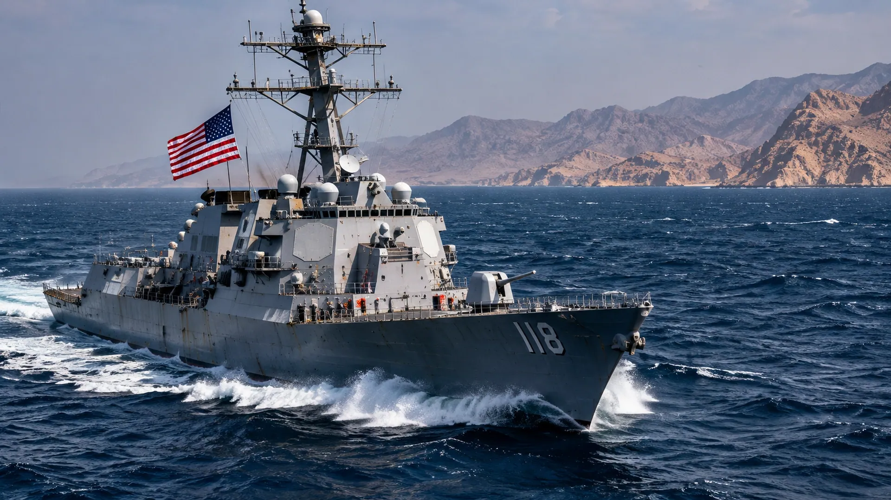

U.S. NAVY DISABLES SHIP NEAR IRAN
CENTCOM says a commercial vessel was disabled after attempting to breach the American naval blockade.

A commercial ship, a naval blockade, and American weapons fired at sea. That is where the confrontation with Iran stood this weekend—and the incident raises a question that cannot be dismissed: how many encounters like this can take place before one turns into something far larger?
U.S. Central Command said American forces disabled a St. Kitts-flagged commercial vessel in the Gulf of Oman after its crew ignored repeated instructions to stop. The military described the ship as attempting to violate the blockade imposed on traffic to and from Iranian ports. That is the American account of the operation; the ship's crew and owners have not supplied a comparably detailed public account in the reporting reviewed by TNS.
This is not an ordinary maritime inspection. A blockade is a form of coercion backed by the threat of force. Merchant crews, insurers, shipping companies and regional governments must decide what routes remain usable while American forces attempt to prevent prohibited movements. Every additional boarding, warning shot or disabling strike creates opportunities for miscalculation.
Iran has tried to exert its own pressure on Gulf shipping. Iranian authorities reported vessels damaged by mines in the Strait of Hormuz, although the circumstances of those incidents remain disputed. Reuters reported that it could not independently confirm the competing accounts of the maritime attacks. The uncertainty itself is dangerous: captains do not need to know who placed a mine to decide that a route is too risky.
The Gulf of Oman connects the open Indian Ocean to the Strait of Hormuz, the narrow passage through which a significant share of the world's seaborne energy trade travels. A vessel disabled there becomes more than a single ship in the headlines. It becomes a signal to every operator calculating whether to sail, reroute or wait.
Watch the next CENTCOM statements, any response from Iran, and the behavior of commercial shipping companies. A military operation may last minutes; its economic consequences can last much longer.
Sources and further reading: Reporting and source material